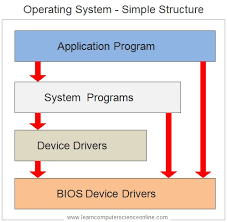
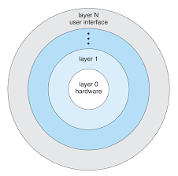
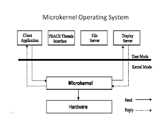

Operating System Design and Implementation
An operating system is a construct that allows the user application programs to interact with the system hardware. Operating system by itself does not provide any function but it provides an atmosphere in which different applications and programs can do useful work.
There are many problems that can occur while designing and implementing an operating system. These are covered in operating system design and implementation.

Operating System Design Goals :
It is quite complicated to define all the goals and specifications of the operating system while designing it.The design changes depending on the type of the operating system i.e if it is batch system, time shared system, single user system, multi user system, distributed system etc.
There are basically two types of goals while designing an operating system. These are
The operating system should be convenient, easy to use, reliable, safe and fast according to the users. However, these specifications are not very useful as there is no set method to achieve these goals.
The operating system should be easy to design, implement and maintain. These are specifications required by those who create, maintain and operate the operating system. But there is not specific method to achieve these goals as well.
Operating System Mechanisms and Policies :
There is no specific way to design an operating system as it is a highly creative task. However, there are general software principles that are applicable to all operating systems.
A subtle difference between mechanism and policy is that mechanism shows how to do something and policy shows what to do. Policies may change over time and this would lead to changes in mechanism. So, it is better to have a general mechanism that would require few changes even when a policy change occurs.
For example - If the mechanism and policy are independent, then few changes are required in mechanism if policy changes. If a policy favours I/O intensive processes over CPU intensive processes, then a policy change to preference of CPU intensive processes will not change the mechanism.
Operating System Implementation :
The operating system needs to be implemented after it is designed. Earlier they were written in assembly language but now higher level languages are used. The first system not written in assembly language was the Master Control Program (MCP) for Burroughs Computers.
Advantages of Higher Level Language :
here are multiple advantages to implementing an operating system using a higher level language such as: the code is written more fast, it is compact and also easier to debug and understand. Also, the operating system can be easily moved from one hardware to another if it is written in a high level language.
Disadvantages of Higher Level Language
Using high level language for implementing an operating system leads to a loss in speed and increase in storage requirements. However in modern systems only a small amount of code is needed for high performance, such as the CPU scheduler and memory manager. Also, the bottleneck routines in the system can be replaced by assembly language equivalents if required.
Operating System Structure :
Operating system can be implemented with the help of various structures. The structure of the OS depends mainly on how the various common components of the operating system are interconnected and melded into the kernel. Depending on this we have following structures of the operating system:
Simple structure:
Such operating systems do not have well defined structure and are small, simple and limited systems. The interfaces and levels of functionality are not well separated. MS-DOS is an example of such operating system. In MS-DOS application programs are able to access the basic I/O routines. These types of operating system cause the entire system to crash if one of the user programs fails.

Advantages of Simple structure:
Disadvantages of Simple structure:
Layered structure:
An OS can be broken into pieces and retain much more control on system. In this structure the OS is broken into number of layers (levels). The bottom layer (layer 0) is the hardware and the topmost layer (layer N) is the user interface. These layers are so designed that each layer uses the functions of the lower level layers only. This simplifies the debugging process as if lower level layers are debugged and an error occurs during debugging then the error must be on that layer only as the lower level layers have already been debugged.
The main disadvantage of this structure is that at each layer, the data needs to be modified and passed on which adds overhead to the system. Moreover careful planning of the layers is necessary as a layer can use only lower level layers. UNIX is an example of this structure.

Advantages of Layered structure:
Disadvantages of Layered structure:
Micro-kernel:
This structure designs the operating system by removing all non-essential components from the kernel and implementing them as system and user programs. This result in a smaller kernel called the micro-kernel.
Advantages of this structure are that all new services need to be added to user space and does not require the kernel to be modified. Thus it is more secure and reliable as if a service fails then rest of the operating system remains untouched. Mac OS is an example of this type of OS.

Advantages of Micro-kernel structure:
Disadvantages of Micro-kernel structure:
Modular structure or approach:
It is considered as the best approach for an OS. It involves designing of a modular kernel. The kernel has only set of core components and other services are added as dynamically loadable modules to the kernel either during run time or boot time. It resembles layered structure due to the fact that each kernel has defined and protected interfaces but it is more flexible than the layered structure as a module can call any other module.